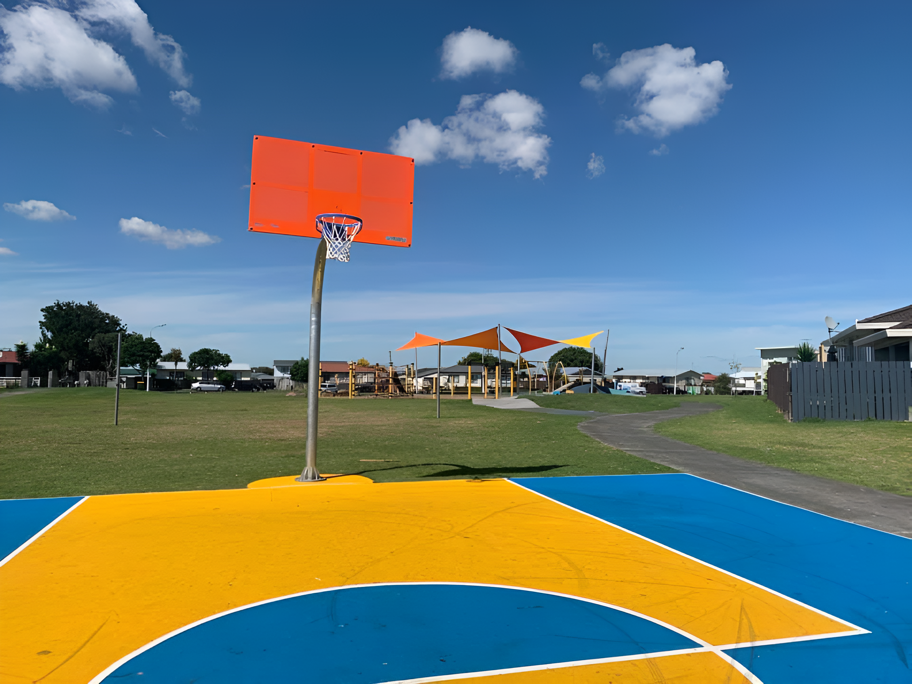
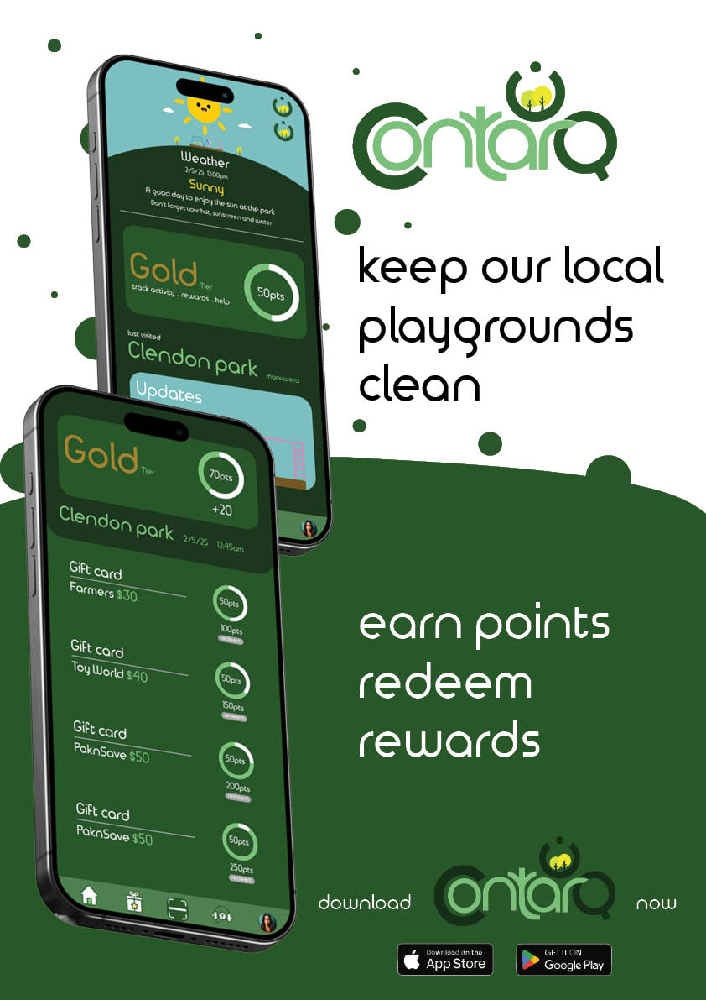

Contarq
Waste less, Play more.
By Caleb Vneasio
At Contarq we are determined to keep our playgrounds safe and clean for our local communities, children and environment. We value sustainability and growth to ensure Clendon becomes a healthy environment
Background
The problem we are facing is the amount of litter being discarded on our playground grounds. To battle this we have created an app. Contarq. Contarq has a reward system, allowing those to collect and dispose other litter to collect points and earn rewards. We have also introduced a fining system where our playgrounds automatically detect litter and fine those responsible. Fortunately we have 'Pay with Litter' which allows those with fines to collect other disposed waste and pay off that fine. This is important as encourages those to help keep our parks clean and stops littering.
Promotional Video
This video showcases the app main functions such as the reward, fining and 'pay with litter' system
How it works!
Contarq is a park-cleaning app designed to eliminate littering through encouragement and accountability
The Contarq app introduces your welcome with a quick update on the weather and a welcoming message to keep the user motivated. They can see their stats and updates on their local playgrounds, they can check other users' experiences by swiping left.
The reward system is simple. On this page you can see your activity task and points, you can click the triangle button to open the redeemable rewards, showing the amount needed to redeem those prizes.
The scanning page is a shortcut to scan the QR codes placed on our smart bins, first, you need to press okay to allow the app to use the camera. After scanning it will automatically connect you to your local park there you can start putting in your litter, earning you points with encouraging words.
If a user is caught littering, they will receive a fine. They can go to the support page and click on fines. Then they will be greeted with their amount due and information about how and why litter is a big problem.
They can click on the triangle to bring up the incidents, with the time and date of when they littered. They can pay for individual fines or pay all. Clicking on either will redirect you to the payment options.
The user can use google/Apple Pay, a debit card or they can opt to ‘Pay with Litter’. Clicking on Pay with Litter will show how many litter pieces you need to pay off that fine. Clicking on the scanning icon will redirect you to the scanning page, where you scan and connect. Then you dispose of that waste. After completion, you are greeted with an encouraging message.
The Campaign
With this poster I hope to catch those attention with the use of clean and sleek designs, also showcasing some of my important pages in my app to make the curious and hope to download. I kept the text simple the first half being a short and simple introduction to our brand and then the rest to also encourage the feeling od being intrigued
Why support us
Contarq is not just about keeping parks clean; it’s about encouraging those to take action, being rewarded for doing so, and holding individuals accountable but allowing themselves to take responsibility. Protecting our shared spaces for future generations is guaranteed with Contarq, and every effort matters. Littering threatens our environment, our communities, and our children, but with Contarq, we have the demand to restore order and ensure that our parks remain safe and clean.
Lets work together to keep our playgrounds a better environment.